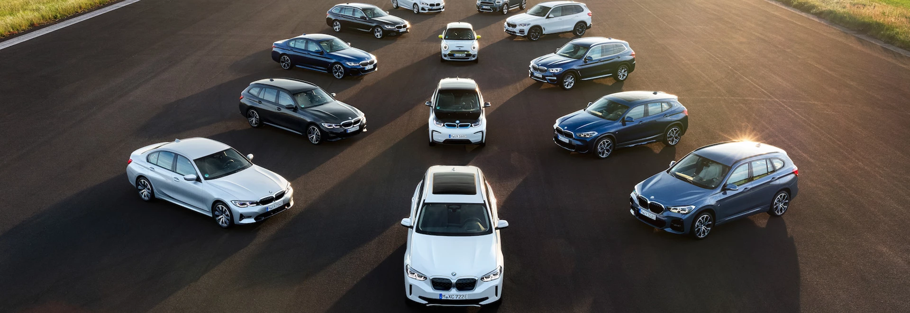
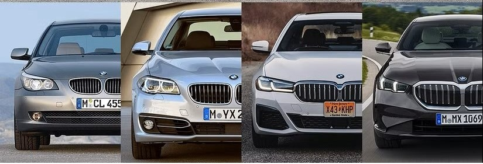
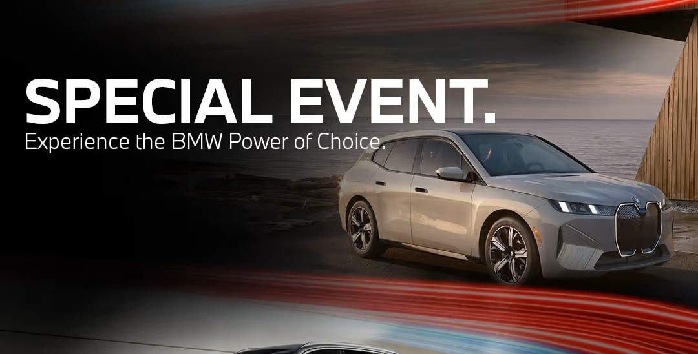

BMW serije
BMW svoje automobile dijeli u različite serije. Ove serije pomažu korisniku razumjeti veličinu vozila, osnovnu namjenu, razinu udobnosti i vrstu korisnika kojoj je pojedini model najviše prilagođen.

| Serija | Opis | Namjena |
|---|---|---|
| Serija 1 | Manji model | Grad, svakodnevna vožnja, kompaktnost |
| Serija 3 | Srednja klasa | Balans između udobnosti i voznih osobina |
| Serija 5 | Veći i udobniji model | Putovanja, poslovna i obiteljska uporaba |
| Serija 7 | Luksuzna klasa | Visoka razina udobnosti i opreme |
| X modeli | SUV vozila | Viši položaj sjedenja i više prostora |

Kako odabrati odgovarajuću seriju?
Manji modeli
Manji modeli prikladni su za gradsku vožnju, lakše parkiranje i korisnike kojima nije potreban velik prostor. Takvi automobili često su praktični za svakodnevnu uporabu.
Srednji modeli
Srednja klasa često je dobar izbor za korisnike koji žele dobar odnos između praktičnosti, udobnosti i voznih osobina. Zato je ova kategorija često vrlo popularna.
Veći modeli
Veći modeli nude više prostora, bolju udobnost na putovanjima i višu razinu opreme, ali su obično skuplji za kupnju i održavanje.
SUV modeli
SUV modeli odgovaraju korisnicima koji žele povišen položaj sjedenja, više prostora i osjećaj preglednosti tijekom vožnje.

Zašto su serije važne?
Olakšavaju usporedbu
Kroz serije korisnik lakše uspoređuje vozila unutar iste marke. Umjesto promatranja samo izgleda, može se razumjeti i kojoj skupini vozilo pripada.
Pomažu pri odabiru
Poznavanje serija omogućuje lakši odabir automobila prema stvarnim potrebama, kao što su broj putnika, način vožnje, prostor i planirani troškovi.
